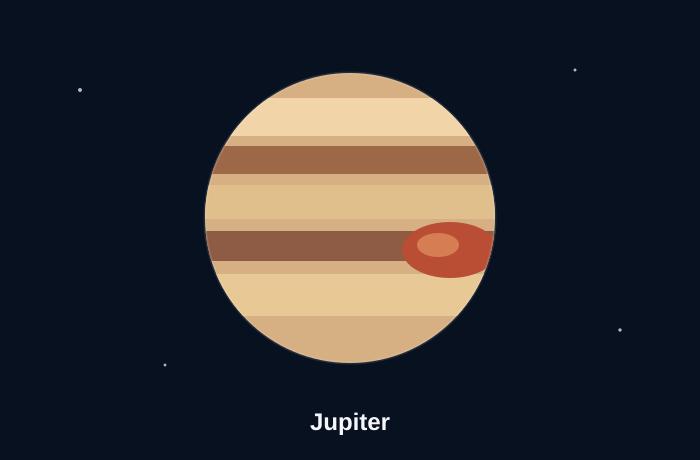

The king of planets
Jupiter is the largest and oldest planet in the solar system. It is famous for its colorful cloud bands, fast rotation, many moons, and the Great Red Spot, which is a long-lasting storm. NASA Jupiter Overview
Jupiter is not a rocky world like Earth or Mars. It is a gas giant made mostly of hydrogen and helium. Because of its size and gravity, Jupiter strongly influences the space environment around it and has become a major target for spacecraft missions.
Quick facts
- Planet type: gas giant
- Known for: Great Red Spot and strong cloud bands
- Scale: much larger than Earth
- Study value: helps scientists understand giant planets